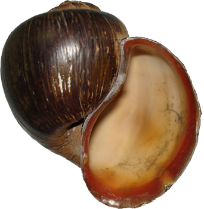

Society of Systematic Biologists
Home of Systematic Biology
Popular contentSyndicateCategories
User loginNavigationWho's onlineThere are currently 0 users and 3 guests online.
|
Workshop on Comparative Genomics, Europe 2011Cesky Krumlov, Czech Republic 9 - 21 January 2011 Application Deadline: 15 October is the preferred application deadline, after which time people will be admitted to the course following review of applications by the admissions committee. However, later applications will certainly be accepted. http://www.molecularevolution.org/workshops/WCG Scott A. Handley, Michael Cummings and Dag Ahren, Co-Directors Workshop on Molecular Evolution, Europe 2011
23 January - 4 February 2011, individual research session 4 - 11 February 2011 Application Deadline: 1 October 2010 http://www.molecularevolution.org/workshops/WME Michael P. Cummings, Scott A. Handley and Naiara Rodriquez-Ezpeleta Co-Directors The Workshop consists of a series of lectures, demonstrations and computer laboratories that cover various aspects of molecular evolution. Faculty are chosen exclusively for their effectiveness in teaching theory and practice in molecular evolution. Included among the faculty are developers and other experts in the use of computer programs and packages such as BLAST, BEAST, Clustal W and Clustal X, FASTA, FigTree, Genealogical Sorting Index, GARLI, LAMARC, MAFFT, Migrate-N, MrBayes, PAML, PAUP*, and SeaView who provide demonstrations and consultations. The Society of Systematic Biologists Sponsors Webinar to Help Scientists Engage in Public PolicyA new online presentation sponsored by SSB aims to inform biologists about proposed federal funding for science and how individual scientists can help secure increased funding for competitive, peer-reviewed grant programs. The webinar, presented as part of the 2nd Annual Biological Sciences Congressional District Visits event, features information on the federal budget process, pending Congressional appropriations bills that would fund biological research in fiscal year 2011, and tips to help scientists prepare for meetings with lawmakers. The webinar was presented by policy staff from the American Institute of Biological Sciences (AIBS) to participants of the 2nd Annual Biological Sciences Congressional District Visits event. SSB is a sponsor of the event, which will take place throughout the month of August 2010. This nationwide event was developed to encourage scientists to meet with their members of Congress in their home state in order to showcase the people, equipment, and facilities that are required to support and conduct scientific research. As a sponsor of this event, SSB is able to offer our members access to a recording of this webinar program until August 31, 2010. The webinar can be viewed for free at http://www.aibs.org/public-policy/congressional_visits_recording.html. Ernst Mayr and Graduate Student Award Winners 2010The Ernst Mayr Award is given to the presenter of the outstanding student talk in the field of systematics at the annual meetings of the Society of Systematic Biologists. The award consists of $US 1000 and a 2-year free subscription to Systematic Biology. This year's competition at the Portland meetings was very stiff and we congratulate all of the participants. We split the award this year between two awardees: David Winter, Otago University, for his talk, Mayr√¢‚?¨‚?¢s hydra grows another head: could Rarotonga√¢‚?¨‚?¢s Lamprocystis radiation have arisen by sympatric speciation?, and Jeremy Brown, University of California, Berkeley, for his talk, Detecting inadequate Bayesian phylogenetic estimates. Assistant Professor at California State University
Systematics Association Lecture "Species for Macroevolution"The Systematics Association Sir Julian Huxley lecture for 2010 will be "Species for Macroevolution" by Prof. Andy Purvis, Imperial College, London. The lecture will be held at The Linnean Society, Burlington House, Piccadilly, London, Wednesday 7th July 2010, 6 pm. The meeting is open to visitors. Wine will be served after the lecture to members and guests. Abstract: Species are fundamental units for evolutionary biology. Alone among the levels of classifications into which we place individuals, the species level has the potential to have an objective reality: when we count them, we think we are counting something meaningful. If we compare number of species in different taxa, regions, or times, we are led to try to understand why the numbers are different or similar. Incomplete knowledge may lead us to use higher taxa, such as genera or families, instead, but we do so in the hope and expectation that they will reflect what good species-level data would show. I will argue: 1. That this hope is misplaced √¢‚?¨" analysing higher taxa conflates processes that should be kept separate; 2. That analysing temporal patterns in numbers of higher taxa might be particularly problematic when using large, multi-author databases; 3. That even species cannot be used uncritically in macroevolutionary analyses √¢‚?¨" even with good data (a complete phylogeny of present-day species, or a complete record of fossil species) √¢‚?¨" but that 4. The best fossil records can let us come close to the ideal species for macroevolution, letting us tackle questions that cannot be addressed any other way. Graduate Assistantship: Systematics of New World apple snails (Ampullariidae)A NSF-funded graduate student position is available to work on a systematic revision of the New World Ampullariidae in the laboratory of Dr. Robert H. Cowie in collaboration with Dr. Ken Hayes, Dr. Ellen E. Strong (Smithsonian Institution), and Dr. Silvana C. Thiengo (Instituto Oswaldo Cruz, Brazil). For more details visit http://www.hawaii.edu/cowielab/GA_notice.htm. Initial informal inquiries are welcomed and should be directed to Dr. Hayes, but all applicants will be required to submit a formal application consisting of: (1) cover letter, (2) curriculum vitae, (3) statement of research experience that explains your background, specific interest in the project, and experience/interests in the topic areas mentioned above, and (4) the names and contact information for at least three academic/scientific references. Postdoc in coevolution with @mikecharleston at University of Sydney
Understanding coevolution at the macroscopic level is the key to understanding the √¢‚?¨≈?big picture√¢‚?¨¬ù of how parasites and pathogens coevolve with, and switch between, their hosts. The central aim of this project is to develop and extend the statistical framework of coevolution at the species level and above, to fill this gap in our knowledge. Sabbatical Scholars And Collaborative Working Groups @nescentProposals for Sabbaticals and for collaborative working groups (Working Groups and Catalysis Meetings) are now being accepted at The National Evolutionary Synthesis Center (NESCent). We are looking to support innovative approaches to outstanding problems in evolutionary biology. In particular, proposals that have a clear interdisciplinary focus, or involve evolutionary concepts in non-traditional disciplines, are strongly encouraged, as are proposals that demonstrate international participation and a mix of senior and emerging researchers, including graduate students. Postdoctoral Positions at the American Museum of Natural History (AMNH)
Applicants should have experience in systematics, biogeography, host-pathogen systems, and/or computational biology. Ph.D. required in biology, computer science, or related fields. |
Latest issue
EVOLDIRphylobabble.orgiPhyloPhyloseminarSystematics AssociationNESCentThe Genealogical World of Phylogenetic NetworksCiteULike PhylogenyEvolutionary Bioinformatics
CladisticsBMC Evolutionary Biology
Molecular Biology and Evolution |
 Follow us on Twitter
Follow us on Twitter Find us on Facebook
Find us on Facebook California State University, Northridge (CSUN) seeks an evolutionary biologist for a tenure-track Assistant Professor position in the Department of Biology, starting August 2011. Applicants must have a Ph.D. and postdoctoral experience. The successful candidate shall develop a vigorous research program involving undergraduate and M.S. students, seek extramural research funding, and demonstrate teaching excellence. A research focus on patterns or processes of diversification among species or populations is preferred. Teaching options include a course on the diversity of a group of terrestrial organisms, molecular systematics, evolution, and introductory biology. Applicants shall also be screened on how well they complement existing strengths in the department.
California State University, Northridge (CSUN) seeks an evolutionary biologist for a tenure-track Assistant Professor position in the Department of Biology, starting August 2011. Applicants must have a Ph.D. and postdoctoral experience. The successful candidate shall develop a vigorous research program involving undergraduate and M.S. students, seek extramural research funding, and demonstrate teaching excellence. A research focus on patterns or processes of diversification among species or populations is preferred. Teaching options include a course on the diversity of a group of terrestrial organisms, molecular systematics, evolution, and introductory biology. Applicants shall also be screened on how well they complement existing strengths in the department.